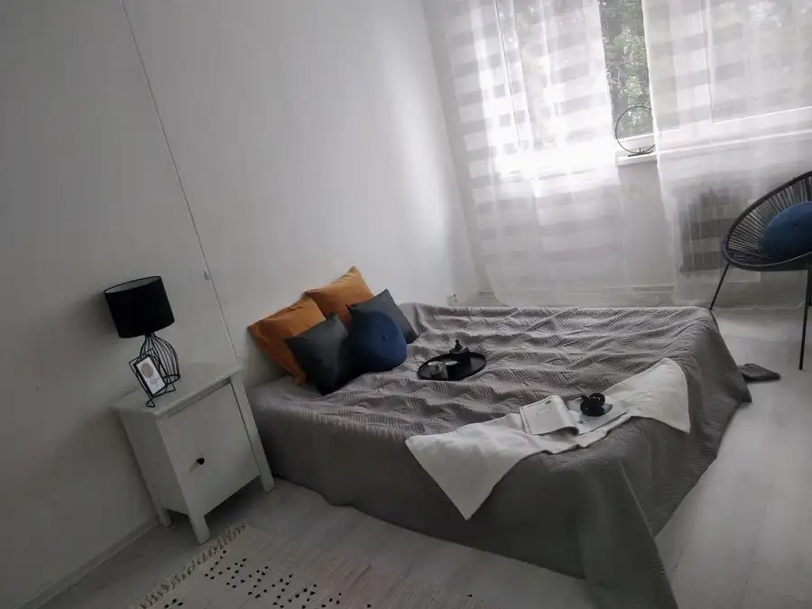
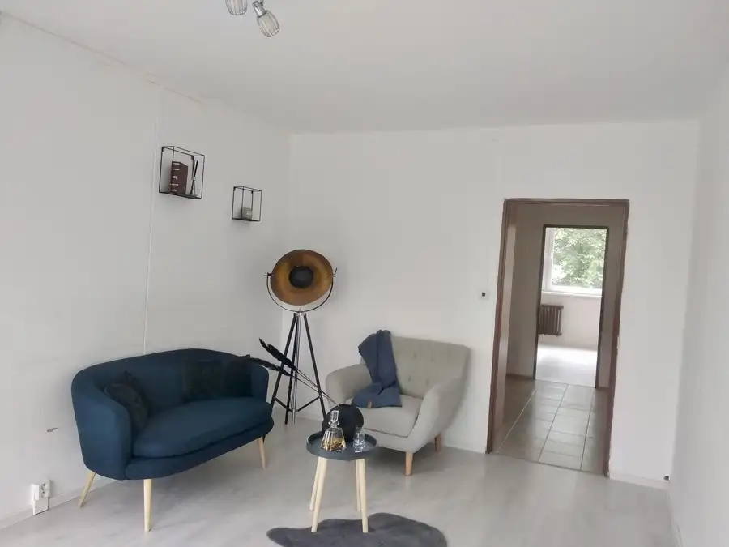

Praktický 3- izb. byt (69 m2) / Obrody / Košice - sídlisko Terasa
Západ, Košice



- Dispozícia3-izbový
- Plocha69 m²
- Poschodie2.
- StavPôvodný stav
- VlastníctvoOsobné
O nehnuteľnosti
Spoločnosť PARTNERS REAL Vám v exkluzívnom zastúpení ponúka na predaj 3 - izbový byt situovaný v jednej z najobľúbenejších Košických lokalít, sídlisko Terasa - ul. Obrody. Táto poloha bytu Vám zaručuje kompletnú občiansku vybavenosť v okolí (Lekárska fakulta Univerzity Pavla Jozefa Šafárika v Košiciach, OC Galéria, zastávky mhd, ...).Výmera bytu je 69 m2 a nachádza sa na 2. poschodí v panelovom bytovom dome po rekonštrukcií s výťahom. Orientácia miestností je na Severo-západ (kuchyňa a obývačka) a Juho – východ ( 2x izba). Byt prešiel dávnejšie čiastočnou rekonštrukciou, osadené sú plastové okná, v izbách plávajúce podlahy a v kúpeľni a wc keramická dlažba. Inak je v peknom, udržiavanom pôvodnom stave. V byte aktuálne bývajú nájomníci, ktorí majú záujem v nájme pokračovať. Pre nového majiteľa tak nehnuteľnosť predstavuje zaujímavú investičnú príležitosť s existujúcim nájomným vzťahom a okamžitým príjmom z prenájmu. Aktuálne nájomné predstavuje 700,- € mesačne. K bytu prislúcha komora ktorá je umiestnená oproti bytu na chodbe.Dispozícia: Vstup je do predsiene so šatníkovou skriňou, vpravo sú 2 izby, oproti vstupu je kúpeľňa a samostatné WC. Vľavo, za šatníkovou skriňou sa vchádza do obývacej izby s prístupom do kuchyne.Náklady na bývanie: 250,-€ / mes.Cena nehnuteľnosti je 210.000,- €V prípade záujmu kontaktujte:Ing. Marek Vološinyi / senior maklér, tel. kontakt: 0948 757 313, email: volosinyi@partnersreal.sk
Parametre
- Cena vrátane energií
- Nie
- Druh
- 3 izbový byt
- Dátum zverejnenia
- 09. 09. 2026
- Energie
- 250
- Podlažie
- 2
- Počet izieb / miestností
- 3
- Stav nehnuteľnosti
- Pôvodný stav
- Telekomunikácie
- Internet
- Typ
- Predaj
- Typ konštrukcie
- Panelová
- Vlastníctvo
- Osobné
- Úžitková plocha
- 69 m²
Kde to je


Mohlo by Vás zaujímať
 BytNové
205 000 €Tehlový 3 – izb. byt / Národná trieda / Košice – Sever
Sever, Košice
3-izbový64 m²6. podlažie
BytNové
205 000 €Tehlový 3 – izb. byt / Národná trieda / Košice – Sever
Sever, Košice
3-izbový64 m²6. podlažie
 BytNové
209 900 €Tehlový 3 – izb. byt (74 m2) / Národná trieda / Košice
Sever, Košice
3-izbový74 m²5. podlažie
BytNové
209 900 €Tehlový 3 – izb. byt (74 m2) / Národná trieda / Košice
Sever, Košice
3-izbový74 m²5. podlažie
 BytNové
210 000 €1,5 izb. byt (36 m2) / Lukratívna lokalita / Krivá / Košice - Juh
Juh, Košice
2-izbový36 m²8. podlažie
BytNové
210 000 €1,5 izb. byt (36 m2) / Lukratívna lokalita / Krivá / Košice - Juh
Juh, Košice
2-izbový36 m²8. podlažie